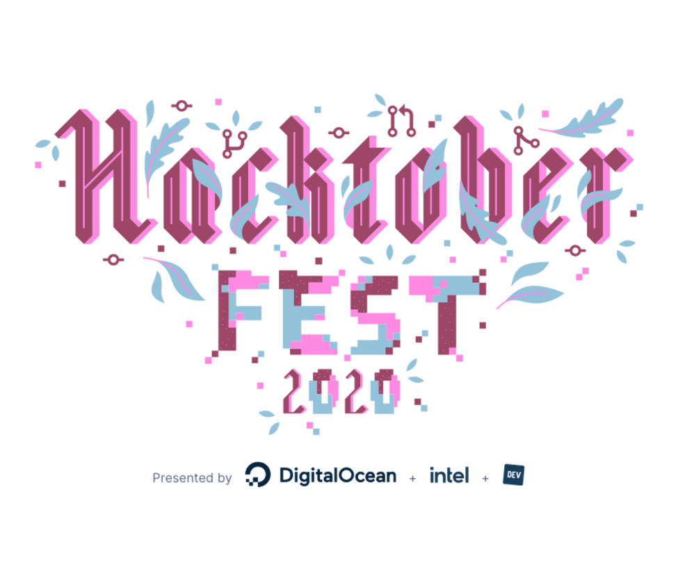

♦︎Some Open Source Programs♦︎
Google Summer Of Code (GSOC)
Google Summer of Code program is a program started by Google and has completed 16 years. It is a program that aims to promote open-source software development among university students. There are a few organizations and these organizations have mentors. First, the organizations apply to Google and after the organizations are selected then the students apply to the organizations. Bear in mind that you are not an employee of Google or even not an intern at Google. You’re working with that organization that you applied to or got selected in. It is a paid program with a stipend of 1500 USD.

Digital Ocean Hacktoberfest
Hacktoberfest is a really popular open-source program that is hosted by Digital Ocean and is open to everyone across the world. Here, you need to submit four or more quality pull requests and you’ll either get a chance to plant a tree or get a limited-edition t-shirt. The main idea over here is that there’s no such thing as a selection-criteria in this particular program. So, this is very useful for individuals, in particular, who are just starting out with open source. You can contribute to participating projects on GitHub and even if you’re not able to make a large major contribution what you can get out of it is how to use Git and Github.
MLH Fellowship
Major League Hacking (MLH), founded in 2013, is a global community for student developers. MLH recently launched a program known as MLH fellowship which is a 12-week remote program where students collaborate on Open Source projects that align their personal interests with the general requirements of the industry and students can participate from their homes. It has mainly three tracks – Explorer, Open Source, and Externship. Here you will gain those skills that you require to be a successful engineer like writing good documentation, open-source best practices, communication, etc. Also, make sure you meet the eligibility criteria before applying for the program.

Outreachy
The Outreachy is also a really great program for students that aims to support diversity in open source. It is sort of a remote internship of 3 months and only a handful number of students are selected across the world. The Outreachy internship projects focus on programming, documentation, project marketing, etc. During the application process, you need to show some genuine eagerness that why you want to be an Outreachy intern and in turn, what you’re going to accomplish, and then how you plan to promote diversity and all sorts of things. It is a paid internship in which you are paid an amount of 5500 USD.

GirlScript Summer of Code (GSSoC)
One thing that an open-source project cannot get enough of is good documentation. However, Google Season of Docs is a new program by Google where technical writers and open source organizations come together and work on open source projects. The technical writers write documentation for open source organizations and also get paid by Google. It is a worthwhile platform for students to learn from industry experts and to work on open-source projects. Also, you need to remember that you must be aged 18 or more at the time of registration to become eligible for Google Season of Docs.

Google Season of Docs (GSoD)
Google Summer of Code program is a program started by Google and has completed 16 years. It is a program that aims to promote open-source software development among university students. There are a few organizations and these organizations have mentors. First, the organizations apply to Google and after the organizations are selected then the students apply to the organizations. Bear in mind that you are not an employee of Google or even not an intern at Google. You’re working with that organization that you applied to or got selected in. It is a paid program with a stipend of 1500 USD.